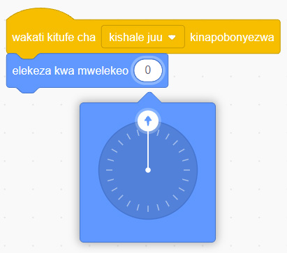
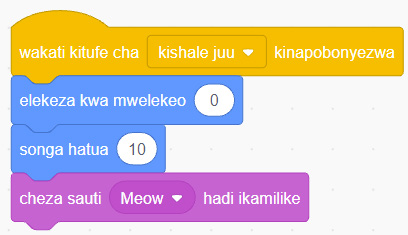

Maelezo ya programu fikivu ya Quorum: Programu inaonyesha kuanza kwa kubonyeza kishale juu, kisha kuweka mwelekeo kuwa nyuzi 0. Mshale kwenye duara unaelekea juu.Kielelezo namba 47: kubadilisha nyuzi.
6.
Buruta na dondosha bloku ya ‘songa hatua’ kwenye eneo la kuandikia. Kisha iunge bloku hiyo kwenye bloku ya ‘elekeza kwa mwelekeo’.
7.
Bofya au tumia mishale menyu ya bloku za ‘Sauti’.
8.
Buruta na dondosha bloku ya ‘cheza sauti hadi ikamilike’ kwenye eneo la kuandikia. Kisha iunge bloku hiyo kwenye bloku ya ‘songa hatua’. Utapata programu ya kwanza kama inavyoonekana katika Kielelezo namba 48.

Maelezo ya programu fikivu ya Quorum: Programu inaanza kwa kubonyeza kishale juu, inaelekeza mwelekeo kuwa nyuzi 0, kisha sprite inasonga hatua 10 na kucheza sauti ya Meow hadi ikamilike.Kielelezo namba 48: programu ya kumfanya ‘Sprite’ aende juu.
9.
Weka kipanya kwenye programu uliyounda, kisha bofya au tumia mishale kitufe cha kulia cha kipanya. Utapata menyu kama